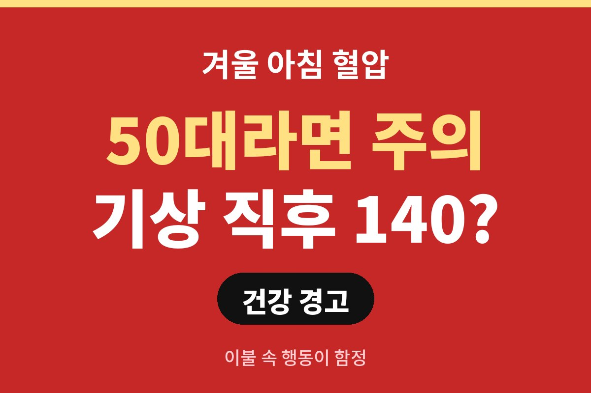
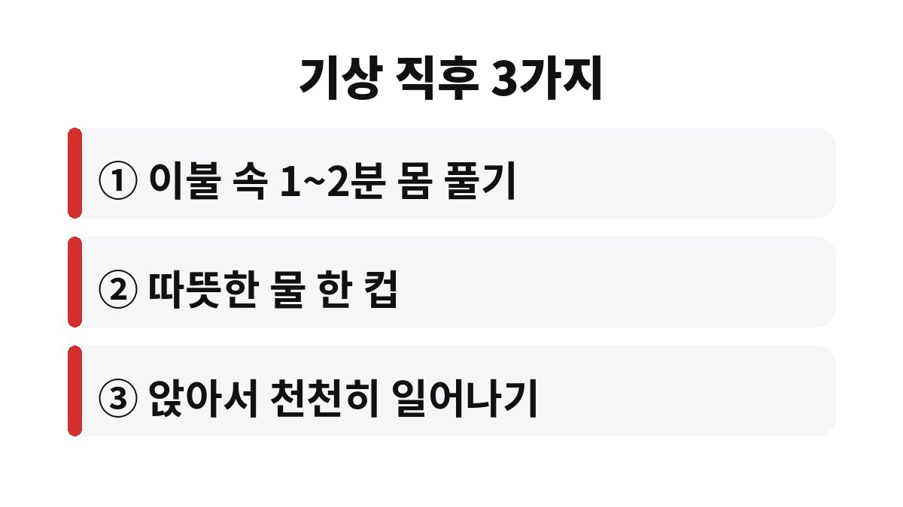
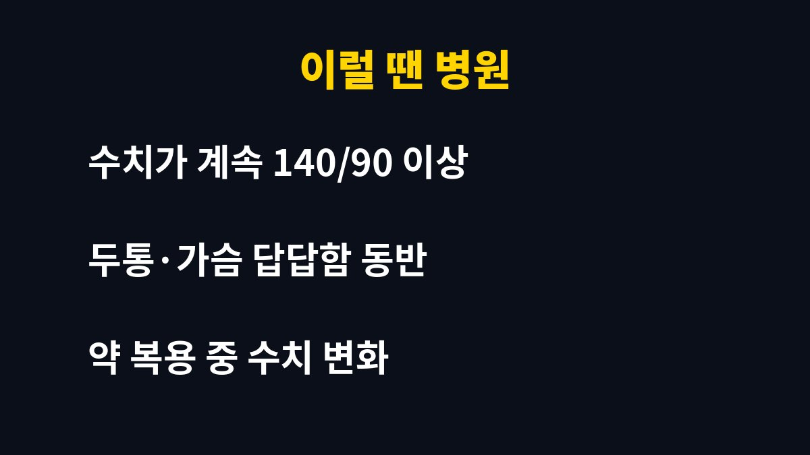

겨울 아침 혈압이 140/90 이상으로 자주 나온다면 가볍게 넘기지 말고 생활 습관부터 점검해야 한다. 50대 이상이거나 부모님이 고혈압이라면, 눈 뜨자마자 하는 행동 하나가 오히려 혈압을 더 끌어올릴 수 있는데 그 이유가 무엇일까.
날씨가 추워지면 우리 몸은 체온을 지키려고 말초 혈관을 좁힌다. 혈관이 좁아지면 같은 양의 피를 보내기 위해 심장이 더 세게 일해야 하고, 그만큼 혈압이 올라간다. 겨울에 혈압 수치가 평소보다 높게 나오는 이유가 여기에 있다.
특히 아침 시간대는 더 민감하다. 잠을 자는 동안에는 혈압이 낮아졌다가, 일어나기 전후로 몸이 활동 모드로 바뀌면서 빠르게 올라간다. 여기에 방 안 온도까지 낮으면 혈관이 한 번 더 움츠러든다. 그래서 겨울 아침 혈압은 다른 계절보다 변동 폭이 커지기 쉽다.
가장 흔한 실수는 알람이 울리자마자 벌떡 일어나 찬 공기 속으로 걸어 나가는 것이다. 따뜻한 이불 속에서 갑자기 차가운 거실이나 화장실로 이동하면 혈관이 순식간에 수축한다. 이때 혈압이 급하게 오르내리면서 어지럼증이나 두통이 생길 수 있다.
또 하나는 일어나자마자 커피를 마시거나 담배를 찾는 습관이다. 카페인과 니코틴은 일시적으로 혈압과 맥박을 높이는 것으로 알려져 있다. 이미 아침에 혈압이 올라 있는 상태에서 자극을 더하면 부담이 커질 수 있다. 부모님이 이런 습관을 갖고 계신다면 한 번쯤 짚어 드리는 것이 좋다.
첫째, 눈을 뜬 뒤 바로 일어나지 말고 이불 속에서 1~2분 정도 손발을 움직이며 몸을 깨운다. 둘째, 앉은 자세로 잠시 머문 뒤 천천히 일어난다. 셋째, 방 안 온도가 너무 낮지 않도록 보온에 신경 쓰고, 나갈 때는 겉옷을 먼저 걸친다. 이 세 가지만 지켜도 혈관이 받는 충격을 줄이는 데 도움이 된다.
물 한 컵을 천천히 마시는 것도 좋은 방법이다. 밤새 몸에서 수분이 빠져나가 혈액이 상대적으로 끈적해지기 쉬운데, 미지근한 물이 이를 완화해 준다. 다만 신장이나 심장 질환으로 수분 제한이 있다면 의사의 지시를 따라야 한다.
집에서 혈압을 잴 때는 기상 후 1시간 안에, 화장실을 다녀온 뒤 아침 약이나 식사 전에 재는 것이 일반적인 권장 방법이다. 의자에 등을 기대고 5분쯤 안정을 취한 다음, 팔을 심장 높이에 두고 측정한다. 같은 시간에 같은 팔로 며칠간 기록하면 병원에서 상담할 때 큰 도움이 된다.
한 번 높게 나왔다고 해서 바로 고혈압이라고 단정할 수는 없다. 하지만 140/90 이상이 반복되거나 두통, 가슴 답답함, 시야 흐림이 함께 나타난다면 미루지 말고 진료를 받아야 한다. 이미 약을 복용 중이라면 임의로 줄이거나 끊지 말고 반드시 담당 의사와 상의해야 한다.
오늘 아침에 일어나서 가장 먼저 한 행동이 무엇이었는지 한번 떠올려 보자. 부모님께도 이 글을 공유하고, 이불 속 1분 습관부터 같이 시작해 보면 좋겠다. 도움이 되었다면 구독으로 다음 건강 정보도 받아 보시길 바란다.


※ 이 글은 일반적인 건강 정보이며, 개인별 진단과 치료는 반드시 전문의와 상담하시기 바랍니다.